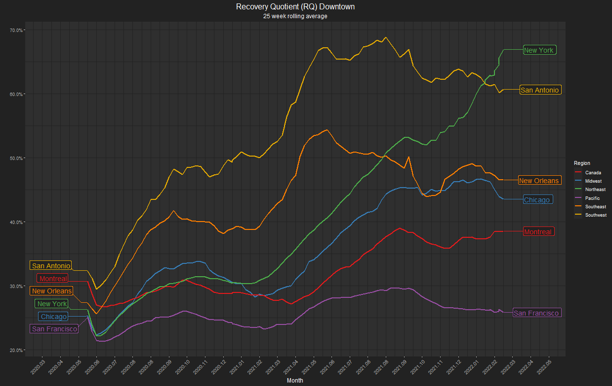

Recovery ranking
Comparison of overall recovery in activity levels in our downtown and urban areas.


Explanatory variables
Experiment with downtown recovery correlations with employment, land use, and socioeconomic data.

Comparative Map
Visualize our urban recovery comparatively across the United States and Canada.